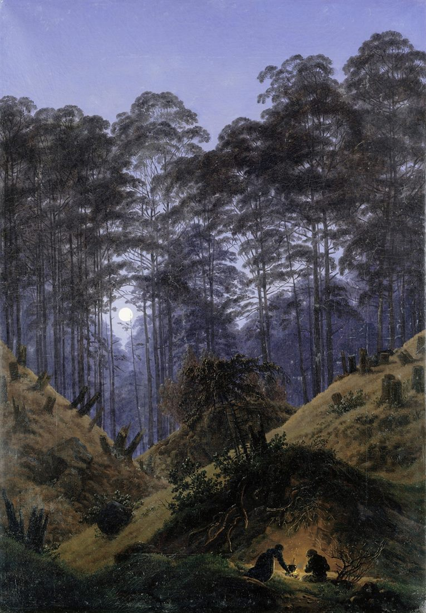

Research technologist by daylight.
Poet after dark.
The night shift is the one I mean. The dogs supervise both.

after Caspar David Friedrich · public domain, via Artvee
Short bio
I grew up in Rheine, a small town in Germany, in the 1990s, and now live in the mountains of New Mexico, in a stretch of forest that doesn’t ask questions. I’ve published two poetry collections, and I’m drafting two novels — one military sci-fi horror, one eco-fantasy.
Poetry is the thing that did the repair work when I needed it — the kind you have to do yourself. I’ve been broken in half twice, both times literally: two broken spines, no wheelchair either round. I write sitting on the ground, wake at 4:47 out of a habit the army set and never came back for, and cook elaborate meals like each one is a dare. I’m bad at most of it and do it anyway. That’s the whole method.
FAQ
How do you say “Wirth”?
Like “worth,” with the vowel swapped and the h barely there. Land anywhere near “worth” and I’ll answer.
What do you write?
Poetry, mostly — two collections so far. And two novels in progress: Disposal Unit, military sci-fi horror, and Worlds Beneath Roots, eco-fantasy. The Notebook holds the characters, fragments, and worldbuilding for both.
Are the poems about you?
Mostly. Unfiltered Thoughts of a Broken Soul keeps every poem exactly as it was first written — no revisions, no second takes. Tough Men Don’t Cry is the seventy-five that survived out of four hundred.
What’s the day job?
Research technologist. It buys the dog food and the good knives.
Why 4:47?
The army set that alarm a long time ago and never came back for it.
You wrote a novel before these. What happened to it?
I read The Library at Mount Char halfway through the draft, decided I couldn’t stand my own prose, and rewrote the whole book to be “more mysterious.” Then I put it where mysterious things go. The poems, I kept.
Best writing advice you’ve got?
Be bad at it and keep going. I have a lot of practice with the first part.
What’s with the plush keychains?
No explanation has held up under questioning.
How do I reach you — reader mail, an event, a rights query?
The Contact page. A real person reads all of it, slowly.
Now
- Drafting the second act of Disposal Unit. It’s going badly, which is where it usually goes before it goes well.
- Reading a stack of eco-fiction and one book about soil.
- Walking the same three miles of forest most mornings, looking for things that don’t belong.
- A new poem goes up in the Notebook at the start of each month.
Elsewhere
Newsletter’s on Substack — a few times a year. Everything else — press, events, rights, a short or long bio for reprinting — is on the Contact page. A proper author photo is coming; in the meantime, the forest above.